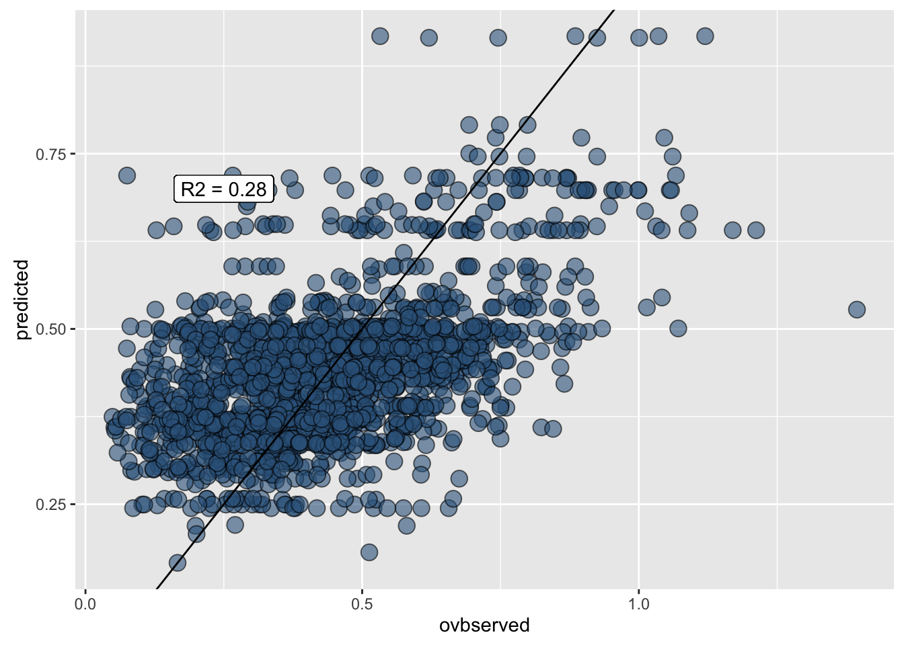

Data wrangling with dplyr and tidyr
Tyler Clavelle & Dan Ovando
2016-03-11
Overview
Data scientists, according to interviews and expert estimates, spend from 50 percent to 80 percent of their time mired in the mundane labor of collecting and preparing data, before it can be explored for useful information. - NYTimes (2014)
This tutorial will cover the tidyr and dplyr packages created by the mythical code wizard Hadley Wickham of ggplot2 fame. The “gg” in ggplot2 stands for the “grammar of graphics”. Hadley similarly considers the functionality of the two packages dplyr and tidyr to provide the “grammar of data manipulation”.
Getting Started
You can download RStudio if you don’t have latest version 0.99.892 (menu RStudio -> About RStudio), which has many nice additions for running R chunks and providing table of contents in Rmarkdown documents.
Install and/or load the following packages:
## Install packages if needed
# install.packages('devtools')
# install.packages('readr')
# install.packages('dplyr')
# install.packages('plyr')
# install.packages('tidyr')
# install.packages('stringr')
# install.packages('ggplot2')
# Load packages
suppressPackageStartupMessages({
library(devtools)
library(readr)
library(dplyr)
library(broom)
library(tidyr)
library(stringr)
library(ggplot2)
})## Warning: package 'ggplot2' was built under R version 3.2.4# Check package versions after Packages pane -> Update
devtools::session_info()## Session info --------------------------------------------------------------## setting value
## version R version 3.2.3 (2015-12-10)
## system x86_64, darwin13.4.0
## ui X11
## language (EN)
## collate en_US.UTF-8
## tz America/Los_Angeles
## date 2016-03-11## Packages ------------------------------------------------------------------## package * version date source
## assertthat 0.1 2013-12-06 CRAN (R 3.2.0)
## broom * 0.4.0 2015-11-30 CRAN (R 3.2.3)
## colorspace 1.2-6 2015-03-11 CRAN (R 3.2.0)
## DBI 0.3.1 2014-09-24 CRAN (R 3.2.0)
## devtools * 1.10.0 2016-01-23 CRAN (R 3.2.3)
## digest 0.6.9 2016-01-08 CRAN (R 3.2.3)
## dplyr * 0.4.3 2015-09-01 CRAN (R 3.2.0)
## evaluate 0.8.3 2016-03-05 CRAN (R 3.2.4)
## formatR 1.3 2016-03-05 CRAN (R 3.2.3)
## ggplot2 * 2.1.0 2016-03-01 CRAN (R 3.2.4)
## gtable 0.2.0 2016-02-26 CRAN (R 3.2.3)
## htmltools 0.3 2015-12-29 CRAN (R 3.2.3)
## knitr 1.12.3 2016-01-22 CRAN (R 3.2.3)
## lattice 0.20-33 2015-07-14 CRAN (R 3.2.3)
## magrittr 1.5 2014-11-22 CRAN (R 3.2.0)
## memoise 1.0.0 2016-01-29 CRAN (R 3.2.3)
## mnormt 1.5-3 2015-05-25 CRAN (R 3.2.0)
## munsell 0.4.3 2016-02-13 CRAN (R 3.2.3)
## nlme 3.1-125 2016-02-27 CRAN (R 3.2.3)
## plyr 1.8.3 2015-06-12 CRAN (R 3.2.0)
## psych 1.5.8 2015-08-30 CRAN (R 3.2.0)
## R6 2.1.2 2016-01-26 CRAN (R 3.2.3)
## Rcpp 0.12.3 2016-01-10 CRAN (R 3.2.3)
## readr * 0.2.2 2015-10-22 CRAN (R 3.2.0)
## reshape2 1.4.1 2014-12-06 CRAN (R 3.2.0)
## rmarkdown 0.9.5 2016-02-22 CRAN (R 3.2.3)
## scales 0.4.0 2016-02-26 CRAN (R 3.2.3)
## stringi 1.0-1 2015-10-22 CRAN (R 3.2.0)
## stringr * 1.0.0 2015-04-30 CRAN (R 3.2.0)
## tidyr * 0.4.1 2016-02-05 CRAN (R 3.2.3)
## yaml 2.1.13 2014-06-12 CRAN (R 3.2.0)Why use dplyr and tidyr?
- Speed - dplyr and tidyr are really fast
- Readability - the code syntax is straightforward and easy to read
- Chaining - never break the chain. More on this later
- Integrates with ggplot2 - plot your data in the same workflow that you manipulate it with
- Can be used to analyze external databases without knowledge of additional database query languages
Basics of dplyr and tidyr
Data frames and data tables
Although technically two separate packages, dplyr and tidyr were designed to work together and can basically be thought of as a single package. They are designed to work with data frames as is, but it is generally a good idea to convert your data to table data using the read_csv() or tbl_df() functions, particularly when working with large datasets.
## Comparing read.csv with read_csv
# Read in FAO data
fao <- read.csv(file = 'data/FAO_1950to2012_111914.csv', stringsAsFactors = F)
summary(fao)## Country..Country. Species..ASFIS.species. Species..ISSCAAP.group.
## Length:17692 Length:17692 Min. :11.00
## Class :character Class :character 1st Qu.:33.00
## Mode :character Mode :character Median :36.00
## Mean :37.38
## 3rd Qu.:38.00
## Max. :77.00
## Species..ISSCAAP.group..1 Species..ASFIS.species..1
## Length:17692 Length:17692
## Class :character Class :character
## Mode :character Mode :character
##
##
##
## Species..ASFIS.species..2 Fishing.area..FAO.major.fishing.area.
## Length:17692 Min. :18.00
## Class :character 1st Qu.:31.00
## Mode :character Median :37.00
## Mean :45.34
## 3rd Qu.:57.00
## Max. :88.00
## Measure..Measure. X1950 X1951
## Length:17692 Length:17692 Length:17692
## Class :character Class :character Class :character
## Mode :character Mode :character Mode :character
##
##
##
## X1952 X1953 X1954
## Length:17692 Length:17692 Length:17692
## Class :character Class :character Class :character
## Mode :character Mode :character Mode :character
##
##
##
## X1955 X1956 X1957
## Length:17692 Length:17692 Length:17692
## Class :character Class :character Class :character
## Mode :character Mode :character Mode :character
##
##
##
## X1958 X1959 X1960
## Length:17692 Length:17692 Length:17692
## Class :character Class :character Class :character
## Mode :character Mode :character Mode :character
##
##
##
## X1961 X1962 X1963
## Length:17692 Length:17692 Length:17692
## Class :character Class :character Class :character
## Mode :character Mode :character Mode :character
##
##
##
## X1964 X1965 X1966
## Length:17692 Length:17692 Length:17692
## Class :character Class :character Class :character
## Mode :character Mode :character Mode :character
##
##
##
## X1967 X1968 X1969
## Length:17692 Length:17692 Length:17692
## Class :character Class :character Class :character
## Mode :character Mode :character Mode :character
##
##
##
## X1970 X1971 X1972
## Length:17692 Length:17692 Length:17692
## Class :character Class :character Class :character
## Mode :character Mode :character Mode :character
##
##
##
## X1973 X1974 X1975
## Length:17692 Length:17692 Length:17692
## Class :character Class :character Class :character
## Mode :character Mode :character Mode :character
##
##
##
## X1976 X1977 X1978
## Length:17692 Length:17692 Length:17692
## Class :character Class :character Class :character
## Mode :character Mode :character Mode :character
##
##
##
## X1979 X1980 X1981
## Length:17692 Length:17692 Length:17692
## Class :character Class :character Class :character
## Mode :character Mode :character Mode :character
##
##
##
## X1982 X1983 X1984
## Length:17692 Length:17692 Length:17692
## Class :character Class :character Class :character
## Mode :character Mode :character Mode :character
##
##
##
## X1985 X1986 X1987
## Length:17692 Length:17692 Length:17692
## Class :character Class :character Class :character
## Mode :character Mode :character Mode :character
##
##
##
## X1988 X1989 X1990
## Length:17692 Length:17692 Length:17692
## Class :character Class :character Class :character
## Mode :character Mode :character Mode :character
##
##
##
## X1991 X1992 X1993
## Length:17692 Length:17692 Length:17692
## Class :character Class :character Class :character
## Mode :character Mode :character Mode :character
##
##
##
## X1994 X1995 X1996
## Length:17692 Length:17692 Length:17692
## Class :character Class :character Class :character
## Mode :character Mode :character Mode :character
##
##
##
## X1997 X1998 X1999
## Length:17692 Length:17692 Length:17692
## Class :character Class :character Class :character
## Mode :character Mode :character Mode :character
##
##
##
## X2000 X2001 X2002
## Length:17692 Length:17692 Length:17692
## Class :character Class :character Class :character
## Mode :character Mode :character Mode :character
##
##
##
## X2003 X2004 X2005
## Length:17692 Length:17692 Length:17692
## Class :character Class :character Class :character
## Mode :character Mode :character Mode :character
##
##
##
## X2006 X2007 X2008
## Length:17692 Length:17692 Length:17692
## Class :character Class :character Class :character
## Mode :character Mode :character Mode :character
##
##
##
## X2009 X2010 X2011
## Length:17692 Length:17692 Length:17692
## Class :character Class :character Class :character
## Mode :character Mode :character Mode :character
##
##
##
## X2012
## Length:17692
## Class :character
## Mode :character
##
##
## head(fao)## Country..Country. Species..ASFIS.species. Species..ISSCAAP.group.
## 1 Albania Angelsharks, sand devils nei 38
## 2 Albania Atlantic bonito 36
## 3 Albania Barracudas nei 37
## 4 Albania Blue and red shrimp 45
## 5 Albania Blue whiting(=Poutassou) 32
## 6 Albania Bluefish 37
## Species..ISSCAAP.group..1 Species..ASFIS.species..1
## 1 Sharks, rays, chimaeras 10903XXXXX
## 2 Tunas, bonitos, billfishes 1750100101
## 3 Miscellaneous pelagic fishes 17710001XX
## 4 Shrimps, prawns 2280203101
## 5 Cods, hakes, haddocks 1480403301
## 6 Miscellaneous pelagic fishes 1702021301
## Species..ASFIS.species..2 Fishing.area..FAO.major.fishing.area.
## 1 Squatinidae 37
## 2 Sarda sarda 37
## 3 Sphyraena spp 37
## 4 Aristeus antennatus 37
## 5 Micromesistius poutassou 37
## 6 Pomatomus saltatrix 37
## Measure..Measure. X1950 X1951 X1952 X1953 X1954 X1955 X1956 X1957 X1958
## 1 Quantity (tonnes) ... ... ... ... ... ... ... ... ...
## 2 Quantity (tonnes) ... ... ... ... ... ... ... ... ...
## 3 Quantity (tonnes) ... ... ... ... ... ... ... ... ...
## 4 Quantity (tonnes) ... ... ... ... ... ... ... ... ...
## 5 Quantity (tonnes) ... ... ... ... ... ... ... ... ...
## 6 Quantity (tonnes) ... ... ... ... ... ... ... ... ...
## X1959 X1960 X1961 X1962 X1963 X1964 X1965 X1966 X1967 X1968 X1969 X1970
## 1 ... ... ... ... ... ... ... ... ... ... ... ...
## 2 ... ... ... ... ... ... ... ... ... ... ... ...
## 3 ... ... ... ... ... ... ... ... ... ... ... ...
## 4 ... ... ... ... ... ... ... ... ... ... ... ...
## 5 ... ... ... ... ... ... ... ... ... ... ... ...
## 6 ... ... ... ... ... ... ... ... ... ... ... ...
## X1971 X1972 X1973 X1974 X1975 X1976 X1977 X1978 X1979 X1980 X1981 X1982
## 1 ... ... ... ... ... ... ... ... ... ... ... ...
## 2 ... ... ... ... ... ... ... ... ... ... ... ...
## 3 ... ... ... ... ... ... ... ... ... ... ... ...
## 4 ... ... ... ... ... ... ... ... ... ... ... ...
## 5 ... ... ... ... ... ... ... ... ... ... ... ...
## 6 ... ... ... ... ... ... ... ... ... ... ... ...
## X1983 X1984 X1985 X1986 X1987 X1988 X1989 X1990 X1991 X1992 X1993 X1994
## 1 ... ... ... ... ... ... ... ... ... ... ... ...
## 2 ... ... ... ... ... ... ... ... ... ... ... ...
## 3 ... ... ... ... ... ... ... ... ... ... ... ...
## 4 ... ... ... ... ... ... ... ... ... ... ... ...
## 5 ... ... ... ... ... ... ... ... ... ... ... ...
## 6 ... ... ... ... ... ... ... ... ... ... ... ...
## X1995 X1996 X1997 X1998 X1999 X2000 X2001 X2002 X2003 X2004 X2005 X2006
## 1 0 0 53 20 31 30 30 16 79 1 4 68 55
## 2 1 2 0 0 12 30 25 30 24 4 2 23 30
## 3 ... ... ... ... ... 2 ... ... ... 2 4 7
## 4 0 0 3 0 0 - - - - 34 22 15 12 18
## 5 0 0 2 0 0 - - - - 6 ... 1 5 8
## 6 ... ... ... ... ... ... ... ... ... 2 6 9
## X2007 X2008 X2009 X2010 X2011 X2012
## 1 12 23 14 78 12 5
## 2 19 27 21 23 12 5
## 3 ... ... ... 7 ... ...
## 4 ... ... ... ... ... ...
## 5 - - - - - -
## 6 - - - - - -# vs using read_csv
fao <- read_csv(file = 'data/FAO_1950to2012_111914.csv')
fao## Source: local data frame [17,692 x 71]
##
## Country (Country) Species (ASFIS species) Species (ISSCAAP group)
## (chr) (chr) (int)
## 1 Albania Angelsharks, sand devils nei 38
## 2 Albania Atlantic bonito 36
## 3 Albania Barracudas nei 37
## 4 Albania Blue and red shrimp 45
## 5 Albania Blue whiting(=Poutassou) 32
## 6 Albania Bluefish 37
## 7 Albania Bogue 33
## 8 Albania Caramote prawn 45
## 9 Albania Catsharks, nursehounds nei 38
## 10 Albania Common cuttlefish 57
## .. ... ... ...
## Variables not shown: Species (ISSCAAP group) (chr), Species (ASFIS
## species) (chr), Species (ASFIS species) (chr), Fishing area (FAO major
## fishing area) (int), Measure (Measure) (chr), 1950 (chr), 1951 (chr),
## 1952 (chr), 1953 (chr), 1954 (chr), 1955 (chr), 1956 (chr), 1957 (chr),
## 1958 (chr), 1959 (chr), 1960 (chr), 1961 (chr), 1962 (chr), 1963 (chr),
## 1964 (chr), 1965 (chr), 1966 (chr), 1967 (chr), 1968 (chr), 1969 (chr),
## 1970 (chr), 1971 (chr), 1972 (chr), 1973 (chr), 1974 (chr), 1975 (chr),
## 1976 (chr), 1977 (chr), 1978 (chr), 1979 (chr), 1980 (chr), 1981 (chr),
## 1982 (chr), 1983 (chr), 1984 (chr), 1985 (chr), 1986 (chr), 1987 (chr),
## 1988 (chr), 1989 (chr), 1990 (chr), 1991 (chr), 1992 (chr), 1993 (chr),
## 1994 (chr), 1995 (chr), 1996 (chr), 1997 (chr), 1998 (chr), 1999 (chr),
## 2000 (chr), 2001 (chr), 2002 (chr), 2003 (chr), 2004 (chr), 2005 (chr),
## 2006 (chr), 2007 (chr), 2008 (chr), 2009 (chr), 2010 (chr), 2011 (chr),
## 2012 (chr)# note: read_csv like read.csv(...)
# also keeps original column names and converts to tbl_df()
names(fao) = make.names(names(fao), unique=T) # since original column names have duplicates
## Consider what happens with the following command
# fao # all entries are printed in your console
head(fao) # top five entries are printed in your console, columns wrap and can be difficult to follow if working with many variables## Source: local data frame [6 x 71]
##
## Country..Country. Species..ASFIS.species. Species..ISSCAAP.group.
## (chr) (chr) (int)
## 1 Albania Angelsharks, sand devils nei 38
## 2 Albania Atlantic bonito 36
## 3 Albania Barracudas nei 37
## 4 Albania Blue and red shrimp 45
## 5 Albania Blue whiting(=Poutassou) 32
## 6 Albania Bluefish 37
## Variables not shown: Species..ISSCAAP.group..1 (chr),
## Species..ASFIS.species..1 (chr), Species..ASFIS.species..2 (chr),
## Fishing.area..FAO.major.fishing.area. (int), Measure..Measure. (chr),
## X1950 (chr), X1951 (chr), X1952 (chr), X1953 (chr), X1954 (chr), X1955
## (chr), X1956 (chr), X1957 (chr), X1958 (chr), X1959 (chr), X1960 (chr),
## X1961 (chr), X1962 (chr), X1963 (chr), X1964 (chr), X1965 (chr), X1966
## (chr), X1967 (chr), X1968 (chr), X1969 (chr), X1970 (chr), X1971 (chr),
## X1972 (chr), X1973 (chr), X1974 (chr), X1975 (chr), X1976 (chr), X1977
## (chr), X1978 (chr), X1979 (chr), X1980 (chr), X1981 (chr), X1982 (chr),
## X1983 (chr), X1984 (chr), X1985 (chr), X1986 (chr), X1987 (chr), X1988
## (chr), X1989 (chr), X1990 (chr), X1991 (chr), X1992 (chr), X1993 (chr),
## X1994 (chr), X1995 (chr), X1996 (chr), X1997 (chr), X1998 (chr), X1999
## (chr), X2000 (chr), X2001 (chr), X2002 (chr), X2003 (chr), X2004 (chr),
## X2005 (chr), X2006 (chr), X2007 (chr), X2008 (chr), X2009 (chr), X2010
## (chr), X2011 (chr), X2012 (chr)summary(fao)## Country..Country. Species..ASFIS.species. Species..ISSCAAP.group.
## Length:17692 Length:17692 Min. :11.00
## Class :character Class :character 1st Qu.:33.00
## Mode :character Mode :character Median :36.00
## Mean :37.38
## 3rd Qu.:38.00
## Max. :77.00
## Species..ISSCAAP.group..1 Species..ASFIS.species..1
## Length:17692 Length:17692
## Class :character Class :character
## Mode :character Mode :character
##
##
##
## Species..ASFIS.species..2 Fishing.area..FAO.major.fishing.area.
## Length:17692 Min. :18.00
## Class :character 1st Qu.:31.00
## Mode :character Median :37.00
## Mean :45.34
## 3rd Qu.:57.00
## Max. :88.00
## Measure..Measure. X1950 X1951
## Length:17692 Length:17692 Length:17692
## Class :character Class :character Class :character
## Mode :character Mode :character Mode :character
##
##
##
## X1952 X1953 X1954
## Length:17692 Length:17692 Length:17692
## Class :character Class :character Class :character
## Mode :character Mode :character Mode :character
##
##
##
## X1955 X1956 X1957
## Length:17692 Length:17692 Length:17692
## Class :character Class :character Class :character
## Mode :character Mode :character Mode :character
##
##
##
## X1958 X1959 X1960
## Length:17692 Length:17692 Length:17692
## Class :character Class :character Class :character
## Mode :character Mode :character Mode :character
##
##
##
## X1961 X1962 X1963
## Length:17692 Length:17692 Length:17692
## Class :character Class :character Class :character
## Mode :character Mode :character Mode :character
##
##
##
## X1964 X1965 X1966
## Length:17692 Length:17692 Length:17692
## Class :character Class :character Class :character
## Mode :character Mode :character Mode :character
##
##
##
## X1967 X1968 X1969
## Length:17692 Length:17692 Length:17692
## Class :character Class :character Class :character
## Mode :character Mode :character Mode :character
##
##
##
## X1970 X1971 X1972
## Length:17692 Length:17692 Length:17692
## Class :character Class :character Class :character
## Mode :character Mode :character Mode :character
##
##
##
## X1973 X1974 X1975
## Length:17692 Length:17692 Length:17692
## Class :character Class :character Class :character
## Mode :character Mode :character Mode :character
##
##
##
## X1976 X1977 X1978
## Length:17692 Length:17692 Length:17692
## Class :character Class :character Class :character
## Mode :character Mode :character Mode :character
##
##
##
## X1979 X1980 X1981
## Length:17692 Length:17692 Length:17692
## Class :character Class :character Class :character
## Mode :character Mode :character Mode :character
##
##
##
## X1982 X1983 X1984
## Length:17692 Length:17692 Length:17692
## Class :character Class :character Class :character
## Mode :character Mode :character Mode :character
##
##
##
## X1985 X1986 X1987
## Length:17692 Length:17692 Length:17692
## Class :character Class :character Class :character
## Mode :character Mode :character Mode :character
##
##
##
## X1988 X1989 X1990
## Length:17692 Length:17692 Length:17692
## Class :character Class :character Class :character
## Mode :character Mode :character Mode :character
##
##
##
## X1991 X1992 X1993
## Length:17692 Length:17692 Length:17692
## Class :character Class :character Class :character
## Mode :character Mode :character Mode :character
##
##
##
## X1994 X1995 X1996
## Length:17692 Length:17692 Length:17692
## Class :character Class :character Class :character
## Mode :character Mode :character Mode :character
##
##
##
## X1997 X1998 X1999
## Length:17692 Length:17692 Length:17692
## Class :character Class :character Class :character
## Mode :character Mode :character Mode :character
##
##
##
## X2000 X2001 X2002
## Length:17692 Length:17692 Length:17692
## Class :character Class :character Class :character
## Mode :character Mode :character Mode :character
##
##
##
## X2003 X2004 X2005
## Length:17692 Length:17692 Length:17692
## Class :character Class :character Class :character
## Mode :character Mode :character Mode :character
##
##
##
## X2006 X2007 X2008
## Length:17692 Length:17692 Length:17692
## Class :character Class :character Class :character
## Mode :character Mode :character Mode :character
##
##
##
## X2009 X2010 X2011
## Length:17692 Length:17692 Length:17692
## Class :character Class :character Class :character
## Mode :character Mode :character Mode :character
##
##
##
## X2012
## Length:17692
## Class :character
## Mode :character
##
##
## ## With dplyr
fao<-tbl_df(fao) # convert to table data
fao # now top 10 rows are shown along with data type of each variable. Variables that do not fit in console window are shown below.## Source: local data frame [17,692 x 71]
##
## Country..Country. Species..ASFIS.species. Species..ISSCAAP.group.
## (chr) (chr) (int)
## 1 Albania Angelsharks, sand devils nei 38
## 2 Albania Atlantic bonito 36
## 3 Albania Barracudas nei 37
## 4 Albania Blue and red shrimp 45
## 5 Albania Blue whiting(=Poutassou) 32
## 6 Albania Bluefish 37
## 7 Albania Bogue 33
## 8 Albania Caramote prawn 45
## 9 Albania Catsharks, nursehounds nei 38
## 10 Albania Common cuttlefish 57
## .. ... ... ...
## Variables not shown: Species..ISSCAAP.group..1 (chr),
## Species..ASFIS.species..1 (chr), Species..ASFIS.species..2 (chr),
## Fishing.area..FAO.major.fishing.area. (int), Measure..Measure. (chr),
## X1950 (chr), X1951 (chr), X1952 (chr), X1953 (chr), X1954 (chr), X1955
## (chr), X1956 (chr), X1957 (chr), X1958 (chr), X1959 (chr), X1960 (chr),
## X1961 (chr), X1962 (chr), X1963 (chr), X1964 (chr), X1965 (chr), X1966
## (chr), X1967 (chr), X1968 (chr), X1969 (chr), X1970 (chr), X1971 (chr),
## X1972 (chr), X1973 (chr), X1974 (chr), X1975 (chr), X1976 (chr), X1977
## (chr), X1978 (chr), X1979 (chr), X1980 (chr), X1981 (chr), X1982 (chr),
## X1983 (chr), X1984 (chr), X1985 (chr), X1986 (chr), X1987 (chr), X1988
## (chr), X1989 (chr), X1990 (chr), X1991 (chr), X1992 (chr), X1993 (chr),
## X1994 (chr), X1995 (chr), X1996 (chr), X1997 (chr), X1998 (chr), X1999
## (chr), X2000 (chr), X2001 (chr), X2002 (chr), X2003 (chr), X2004 (chr),
## X2005 (chr), X2006 (chr), X2007 (chr), X2008 (chr), X2009 (chr), X2010
## (chr), X2011 (chr), X2012 (chr)glimpse(fao) # view all columns ## Observations: 17,692
## Variables: 71
## $ Country..Country. (chr) "Albania", "Albania", "A...
## $ Species..ASFIS.species. (chr) "Angelsharks, sand devil...
## $ Species..ISSCAAP.group. (int) 38, 36, 37, 45, 32, 37, ...
## $ Species..ISSCAAP.group..1 (chr) "Sharks, rays, chimaeras...
## $ Species..ASFIS.species..1 (chr) "10903XXXXX", "175010010...
## $ Species..ASFIS.species..2 (chr) "Squatinidae", "Sarda sa...
## $ Fishing.area..FAO.major.fishing.area. (int) 37, 37, 37, 37, 37, 37, ...
## $ Measure..Measure. (chr) "Quantity (tonnes)", "Qu...
## $ X1950 (chr) "...", "...", "...", ".....
## $ X1951 (chr) "...", "...", "...", ".....
## $ X1952 (chr) "...", "...", "...", ".....
## $ X1953 (chr) "...", "...", "...", ".....
## $ X1954 (chr) "...", "...", "...", ".....
## $ X1955 (chr) "...", "...", "...", ".....
## $ X1956 (chr) "...", "...", "...", ".....
## $ X1957 (chr) "...", "...", "...", ".....
## $ X1958 (chr) "...", "...", "...", ".....
## $ X1959 (chr) "...", "...", "...", ".....
## $ X1960 (chr) "...", "...", "...", ".....
## $ X1961 (chr) "...", "...", "...", ".....
## $ X1962 (chr) "...", "...", "...", ".....
## $ X1963 (chr) "...", "...", "...", ".....
## $ X1964 (chr) "...", "...", "...", ".....
## $ X1965 (chr) "...", "...", "...", ".....
## $ X1966 (chr) "...", "...", "...", ".....
## $ X1967 (chr) "...", "...", "...", ".....
## $ X1968 (chr) "...", "...", "...", ".....
## $ X1969 (chr) "...", "...", "...", ".....
## $ X1970 (chr) "...", "...", "...", ".....
## $ X1971 (chr) "...", "...", "...", ".....
## $ X1972 (chr) "...", "...", "...", ".....
## $ X1973 (chr) "...", "...", "...", ".....
## $ X1974 (chr) "...", "...", "...", ".....
## $ X1975 (chr) "...", "...", "...", ".....
## $ X1976 (chr) "...", "...", "...", ".....
## $ X1977 (chr) "...", "...", "...", ".....
## $ X1978 (chr) "...", "...", "...", ".....
## $ X1979 (chr) "...", "...", "...", ".....
## $ X1980 (chr) "...", "...", "...", ".....
## $ X1981 (chr) "...", "...", "...", ".....
## $ X1982 (chr) "...", "...", "...", ".....
## $ X1983 (chr) "...", "...", "...", ".....
## $ X1984 (chr) "...", "...", "...", ".....
## $ X1985 (chr) "...", "...", "...", ".....
## $ X1986 (chr) "...", "...", "...", ".....
## $ X1987 (chr) "...", "...", "...", ".....
## $ X1988 (chr) "...", "...", "...", ".....
## $ X1989 (chr) "...", "...", "...", ".....
## $ X1990 (chr) "...", "...", "...", ".....
## $ X1991 (chr) "...", "...", "...", ".....
## $ X1992 (chr) "...", "...", "...", ".....
## $ X1993 (chr) "...", "...", "...", ".....
## $ X1994 (chr) "...", "...", "...", ".....
## $ X1995 (chr) "0 0", "1", "...", "0 0"...
## $ X1996 (chr) "53", "2", "...", "3", "...
## $ X1997 (chr) "20", "0 0", "...", "0 0...
## $ X1998 (chr) "31", "12", "...", "-", ...
## $ X1999 (chr) "30", "30", "...", "-", ...
## $ X2000 (chr) "30", "25", "2", "-", "-...
## $ X2001 (chr) "16", "30", "...", "-", ...
## $ X2002 (chr) "79", "24", "...", "34",...
## $ X2003 (chr) "1", "4", "...", "22", "...
## $ X2004 (chr) "4", "2", "2", "15", "1"...
## $ X2005 (chr) "68", "23", "4", "12", "...
## $ X2006 (chr) "55", "30", "7", "18", "...
## $ X2007 (chr) "12", "19", "...", "..."...
## $ X2008 (chr) "23", "27", "...", "..."...
## $ X2009 (chr) "14", "21", "...", "..."...
## $ X2010 (chr) "78", "23", "7", "...", ...
## $ X2011 (chr) "12", "12", "...", "..."...
## $ X2012 (chr) "5", "5", "...", "...", ...summary(fao)## Country..Country. Species..ASFIS.species. Species..ISSCAAP.group.
## Length:17692 Length:17692 Min. :11.00
## Class :character Class :character 1st Qu.:33.00
## Mode :character Mode :character Median :36.00
## Mean :37.38
## 3rd Qu.:38.00
## Max. :77.00
## Species..ISSCAAP.group..1 Species..ASFIS.species..1
## Length:17692 Length:17692
## Class :character Class :character
## Mode :character Mode :character
##
##
##
## Species..ASFIS.species..2 Fishing.area..FAO.major.fishing.area.
## Length:17692 Min. :18.00
## Class :character 1st Qu.:31.00
## Mode :character Median :37.00
## Mean :45.34
## 3rd Qu.:57.00
## Max. :88.00
## Measure..Measure. X1950 X1951
## Length:17692 Length:17692 Length:17692
## Class :character Class :character Class :character
## Mode :character Mode :character Mode :character
##
##
##
## X1952 X1953 X1954
## Length:17692 Length:17692 Length:17692
## Class :character Class :character Class :character
## Mode :character Mode :character Mode :character
##
##
##
## X1955 X1956 X1957
## Length:17692 Length:17692 Length:17692
## Class :character Class :character Class :character
## Mode :character Mode :character Mode :character
##
##
##
## X1958 X1959 X1960
## Length:17692 Length:17692 Length:17692
## Class :character Class :character Class :character
## Mode :character Mode :character Mode :character
##
##
##
## X1961 X1962 X1963
## Length:17692 Length:17692 Length:17692
## Class :character Class :character Class :character
## Mode :character Mode :character Mode :character
##
##
##
## X1964 X1965 X1966
## Length:17692 Length:17692 Length:17692
## Class :character Class :character Class :character
## Mode :character Mode :character Mode :character
##
##
##
## X1967 X1968 X1969
## Length:17692 Length:17692 Length:17692
## Class :character Class :character Class :character
## Mode :character Mode :character Mode :character
##
##
##
## X1970 X1971 X1972
## Length:17692 Length:17692 Length:17692
## Class :character Class :character Class :character
## Mode :character Mode :character Mode :character
##
##
##
## X1973 X1974 X1975
## Length:17692 Length:17692 Length:17692
## Class :character Class :character Class :character
## Mode :character Mode :character Mode :character
##
##
##
## X1976 X1977 X1978
## Length:17692 Length:17692 Length:17692
## Class :character Class :character Class :character
## Mode :character Mode :character Mode :character
##
##
##
## X1979 X1980 X1981
## Length:17692 Length:17692 Length:17692
## Class :character Class :character Class :character
## Mode :character Mode :character Mode :character
##
##
##
## X1982 X1983 X1984
## Length:17692 Length:17692 Length:17692
## Class :character Class :character Class :character
## Mode :character Mode :character Mode :character
##
##
##
## X1985 X1986 X1987
## Length:17692 Length:17692 Length:17692
## Class :character Class :character Class :character
## Mode :character Mode :character Mode :character
##
##
##
## X1988 X1989 X1990
## Length:17692 Length:17692 Length:17692
## Class :character Class :character Class :character
## Mode :character Mode :character Mode :character
##
##
##
## X1991 X1992 X1993
## Length:17692 Length:17692 Length:17692
## Class :character Class :character Class :character
## Mode :character Mode :character Mode :character
##
##
##
## X1994 X1995 X1996
## Length:17692 Length:17692 Length:17692
## Class :character Class :character Class :character
## Mode :character Mode :character Mode :character
##
##
##
## X1997 X1998 X1999
## Length:17692 Length:17692 Length:17692
## Class :character Class :character Class :character
## Mode :character Mode :character Mode :character
##
##
##
## X2000 X2001 X2002
## Length:17692 Length:17692 Length:17692
## Class :character Class :character Class :character
## Mode :character Mode :character Mode :character
##
##
##
## X2003 X2004 X2005
## Length:17692 Length:17692 Length:17692
## Class :character Class :character Class :character
## Mode :character Mode :character Mode :character
##
##
##
## X2006 X2007 X2008
## Length:17692 Length:17692 Length:17692
## Class :character Class :character Class :character
## Mode :character Mode :character Mode :character
##
##
##
## X2009 X2010 X2011
## Length:17692 Length:17692 Length:17692
## Class :character Class :character Class :character
## Mode :character Mode :character Mode :character
##
##
##
## X2012
## Length:17692
## Class :character
## Mode :character
##
##
## if (interactive()) View(fao) # interactive==T if in Console, not knittingTidy data
In general, it is good practice to have your data organized in a “tidy” format.
In tidy data:
- Each variable forms a column
- Each observation forms a row
- Each type of observational unit forms a table
Main verbs of dplyr and tidyr
Tidyr and dplyr are designed to help manipulate data sets, allowing you to convert between wide and long formats, fill in missing values and combinations, separate or merge multiple columns, rename and create new variables, and summarize data according to grouping variables.
Dplyr and tidyr rely on the following main verbs:
- Tidyr
gather()andspread()convert data between wide and long format
separate()andunite()separate a single column into multiple columns and vice versa
complete()turns implicit missing values in explicit missing values by completing missing data combinations- Dplyr
filter()subset data based on logical criteria
select()select certain columns
arrange()order rows by value of a column
rename()rename columns
group_by()group data by common variables for performing calculations
mutate()create a new variable/column
summarize()summarize data into a single row of values
Note that unquoted variable names are used by default in tidyr and dplyr functions.
We’ll use these verbs to process the raw FAO landings data into a more manageable tidy format.
Gather and Spread
First let’s convert the FAO data from the current wide format to a long format.
# Let's convert the fao data from it's current wide format to a long format using gather(). Note the use of helper fnc
d <- gather(fao, key='Year', value='Catch', num_range('X',1950:2012)) # ?select for num_range()
# We can convert back to wide format with the spread function by calling the previously created variables
spread(d,Year, Catch)## Source: local data frame [17,692 x 71]
##
## Country..Country. Species..ASFIS.species. Species..ISSCAAP.group.
## (chr) (chr) (int)
## 1 Albania Angelsharks, sand devils nei 38
## 2 Albania Atlantic bonito 36
## 3 Albania Barracudas nei 37
## 4 Albania Blue and red shrimp 45
## 5 Albania Blue whiting(=Poutassou) 32
## 6 Albania Bluefish 37
## 7 Albania Bogue 33
## 8 Albania Caramote prawn 45
## 9 Albania Catsharks, nursehounds nei 38
## 10 Albania Common cuttlefish 57
## .. ... ... ...
## Variables not shown: Species..ISSCAAP.group..1 (chr),
## Species..ASFIS.species..1 (chr), Species..ASFIS.species..2 (chr),
## Fishing.area..FAO.major.fishing.area. (int), Measure..Measure. (chr),
## X1950 (chr), X1951 (chr), X1952 (chr), X1953 (chr), X1954 (chr), X1955
## (chr), X1956 (chr), X1957 (chr), X1958 (chr), X1959 (chr), X1960 (chr),
## X1961 (chr), X1962 (chr), X1963 (chr), X1964 (chr), X1965 (chr), X1966
## (chr), X1967 (chr), X1968 (chr), X1969 (chr), X1970 (chr), X1971 (chr),
## X1972 (chr), X1973 (chr), X1974 (chr), X1975 (chr), X1976 (chr), X1977
## (chr), X1978 (chr), X1979 (chr), X1980 (chr), X1981 (chr), X1982 (chr),
## X1983 (chr), X1984 (chr), X1985 (chr), X1986 (chr), X1987 (chr), X1988
## (chr), X1989 (chr), X1990 (chr), X1991 (chr), X1992 (chr), X1993 (chr),
## X1994 (chr), X1995 (chr), X1996 (chr), X1997 (chr), X1998 (chr), X1999
## (chr), X2000 (chr), X2001 (chr), X2002 (chr), X2003 (chr), X2004 (chr),
## X2005 (chr), X2006 (chr), X2007 (chr), X2008 (chr), X2009 (chr), X2010
## (chr), X2011 (chr), X2012 (chr)if (interactive()) View(d) # interactive==T if in Console, not knitting
# to handle: '-','...',' F','X'Rename
Now let’s rename the columns to more manageable names (syntax is new name = old name)
# Note the use of backticks around column names with special characters like "("
d <- rename(
d,
country = Country..Country.,
commname = Species..ASFIS.species.,
sciname = Species..ASFIS.species..2,
spcode = Species..ASFIS.species..1,
spgroup = Species..ISSCAAP.group.,
spgroupname = Species..ISSCAAP.group..1,
regionfao = Fishing.area..FAO.major.fishing.area.,
unit = Measure..Measure.,
year = Year,catch=Catch)
d## Source: local data frame [1,114,596 x 10]
##
## country commname spgroup
## (chr) (chr) (int)
## 1 Albania Angelsharks, sand devils nei 38
## 2 Albania Atlantic bonito 36
## 3 Albania Barracudas nei 37
## 4 Albania Blue and red shrimp 45
## 5 Albania Blue whiting(=Poutassou) 32
## 6 Albania Bluefish 37
## 7 Albania Bogue 33
## 8 Albania Caramote prawn 45
## 9 Albania Catsharks, nursehounds nei 38
## 10 Albania Common cuttlefish 57
## .. ... ... ...
## Variables not shown: spgroupname (chr), spcode (chr), sciname (chr),
## regionfao (int), unit (chr), year (chr), catch (chr)Select
Remove unwanted columns and observations.
# we could chose all the columns to keep
select(d,country, commname, sciname, spcode, spgroupname, regionfao, year, catch)## Source: local data frame [1,114,596 x 8]
##
## country commname sciname
## (chr) (chr) (chr)
## 1 Albania Angelsharks, sand devils nei Squatinidae
## 2 Albania Atlantic bonito Sarda sarda
## 3 Albania Barracudas nei Sphyraena spp
## 4 Albania Blue and red shrimp Aristeus antennatus
## 5 Albania Blue whiting(=Poutassou) Micromesistius poutassou
## 6 Albania Bluefish Pomatomus saltatrix
## 7 Albania Bogue Boops boops
## 8 Albania Caramote prawn Penaeus kerathurus
## 9 Albania Catsharks, nursehounds nei Scyliorhinus spp
## 10 Albania Common cuttlefish Sepia officinalis
## .. ... ... ...
## Variables not shown: spcode (chr), spgroupname (chr), regionfao (int),
## year (chr), catch (chr)# but it's easier to just specify the columns to get rid of
d<-select(d,-spgroup,-unit)There are also a number of helper functions that can be used in conjunction with select() to let you select without individually listing all those you wish to keep or drop. We used a helper function previously in our gather() function and now we’ll try a few others.
# select all coloumns that begin with the letter s
select(d, starts_with('s'))## Source: local data frame [1,114,596 x 3]
##
## spgroupname spcode sciname
## (chr) (chr) (chr)
## 1 Sharks, rays, chimaeras 10903XXXXX Squatinidae
## 2 Tunas, bonitos, billfishes 1750100101 Sarda sarda
## 3 Miscellaneous pelagic fishes 17710001XX Sphyraena spp
## 4 Shrimps, prawns 2280203101 Aristeus antennatus
## 5 Cods, hakes, haddocks 1480403301 Micromesistius poutassou
## 6 Miscellaneous pelagic fishes 1702021301 Pomatomus saltatrix
## 7 Miscellaneous coastal fishes 1703926101 Boops boops
## 8 Shrimps, prawns 2280100117 Penaeus kerathurus
## 9 Sharks, rays, chimaeras 10801003XX Scyliorhinus spp
## 10 Squids, cuttlefishes, octopuses 3210200202 Sepia officinalis
## .. ... ... ...# select columns that match a regular expression
select(d, matches('*name'))## Source: local data frame [1,114,596 x 3]
##
## commname spgroupname
## (chr) (chr)
## 1 Angelsharks, sand devils nei Sharks, rays, chimaeras
## 2 Atlantic bonito Tunas, bonitos, billfishes
## 3 Barracudas nei Miscellaneous pelagic fishes
## 4 Blue and red shrimp Shrimps, prawns
## 5 Blue whiting(=Poutassou) Cods, hakes, haddocks
## 6 Bluefish Miscellaneous pelagic fishes
## 7 Bogue Miscellaneous coastal fishes
## 8 Caramote prawn Shrimps, prawns
## 9 Catsharks, nursehounds nei Sharks, rays, chimaeras
## 10 Common cuttlefish Squids, cuttlefishes, octopuses
## .. ... ...
## Variables not shown: sciname (chr)# select columns between two columns by referencing their position like normal [,x:y] syntax
select(d, country, spcode:year)## Source: local data frame [1,114,596 x 5]
##
## country spcode sciname regionfao year
## (chr) (chr) (chr) (int) (chr)
## 1 Albania 10903XXXXX Squatinidae 37 X1950
## 2 Albania 1750100101 Sarda sarda 37 X1950
## 3 Albania 17710001XX Sphyraena spp 37 X1950
## 4 Albania 2280203101 Aristeus antennatus 37 X1950
## 5 Albania 1480403301 Micromesistius poutassou 37 X1950
## 6 Albania 1702021301 Pomatomus saltatrix 37 X1950
## 7 Albania 1703926101 Boops boops 37 X1950
## 8 Albania 2280100117 Penaeus kerathurus 37 X1950
## 9 Albania 10801003XX Scyliorhinus spp 37 X1950
## 10 Albania 3210200202 Sepia officinalis 37 X1950
## .. ... ... ... ... ...# select every column (though I haven't found a situation where this is useful yet...)
select(d,everything())## Source: local data frame [1,114,596 x 8]
##
## country commname spgroupname
## (chr) (chr) (chr)
## 1 Albania Angelsharks, sand devils nei Sharks, rays, chimaeras
## 2 Albania Atlantic bonito Tunas, bonitos, billfishes
## 3 Albania Barracudas nei Miscellaneous pelagic fishes
## 4 Albania Blue and red shrimp Shrimps, prawns
## 5 Albania Blue whiting(=Poutassou) Cods, hakes, haddocks
## 6 Albania Bluefish Miscellaneous pelagic fishes
## 7 Albania Bogue Miscellaneous coastal fishes
## 8 Albania Caramote prawn Shrimps, prawns
## 9 Albania Catsharks, nursehounds nei Sharks, rays, chimaeras
## 10 Albania Common cuttlefish Squids, cuttlefishes, octopuses
## .. ... ... ...
## Variables not shown: spcode (chr), sciname (chr), regionfao (int), year
## (chr), catch (chr)Arrange
Arrange entries by country, scientific name, fao region and year. You can use desc() within arrange() to control which variables you want to order in ascending or descending fashion
# arrange by country, sciname, regionfao, and year
d<-arrange(d,country,sciname,regionfao,year)
# if we'd like the years to be descending
arrange(d, country, desc(sciname), regionfao, desc(year))## Source: local data frame [1,114,596 x 8]
##
## country commname spgroupname spcode sciname
## (chr) (chr) (chr) (chr) (chr)
## 1 Albania John dory Miscellaneous demersal fishes 1620100101 Zeus faber
## 2 Albania John dory Miscellaneous demersal fishes 1620100101 Zeus faber
## 3 Albania John dory Miscellaneous demersal fishes 1620100101 Zeus faber
## 4 Albania John dory Miscellaneous demersal fishes 1620100101 Zeus faber
## 5 Albania John dory Miscellaneous demersal fishes 1620100101 Zeus faber
## 6 Albania John dory Miscellaneous demersal fishes 1620100101 Zeus faber
## 7 Albania John dory Miscellaneous demersal fishes 1620100101 Zeus faber
## 8 Albania John dory Miscellaneous demersal fishes 1620100101 Zeus faber
## 9 Albania John dory Miscellaneous demersal fishes 1620100101 Zeus faber
## 10 Albania John dory Miscellaneous demersal fishes 1620100101 Zeus faber
## .. ... ... ... ... ...
## Variables not shown: regionfao (int), year (chr), catch (chr)# if we want to first order by species
arrange(d, sciname, country, regionfao, year)## Source: local data frame [1,114,596 x 8]
##
## country commname spgroupname spcode
## (chr) (chr) (chr) (chr)
## 1 Qatar Flat needlefish Miscellaneous pelagic fishes 1470100801
## 2 Qatar Flat needlefish Miscellaneous pelagic fishes 1470100801
## 3 Qatar Flat needlefish Miscellaneous pelagic fishes 1470100801
## 4 Qatar Flat needlefish Miscellaneous pelagic fishes 1470100801
## 5 Qatar Flat needlefish Miscellaneous pelagic fishes 1470100801
## 6 Qatar Flat needlefish Miscellaneous pelagic fishes 1470100801
## 7 Qatar Flat needlefish Miscellaneous pelagic fishes 1470100801
## 8 Qatar Flat needlefish Miscellaneous pelagic fishes 1470100801
## 9 Qatar Flat needlefish Miscellaneous pelagic fishes 1470100801
## 10 Qatar Flat needlefish Miscellaneous pelagic fishes 1470100801
## .. ... ... ... ...
## Variables not shown: sciname (chr), regionfao (int), year (chr), catch
## (chr)Mutate
Mutate can be used to edit existing variables or create new ones.
d <- mutate(
d,
year = as.numeric(str_replace(year, 'X', '')), # strip X off all year values and convert to numeric
catch = as.numeric(str_replace(catch, c(' F','...','-'), replacement = '')),
logcatch = log10(catch)) # create a new variable of log catch## Warning in eval(substitute(expr), envir, enclos): NAs introduced by
## coercionFilter
Remove unwanted rows/observations.
# remove the "Totals" values and any years with NA catch values
d<-filter(d,!(country %in% c('Totals - Quantity (number)','Totals - Quantity (tonnes)')) & !is.na(catch))
# print data
d## Source: local data frame [310,619 x 9]
##
## country commname spgroupname
## (chr) (chr) (chr)
## 1 Albania Blue and red shrimp Shrimps, prawns
## 2 Albania Blue and red shrimp Shrimps, prawns
## 3 Albania Blue and red shrimp Shrimps, prawns
## 4 Albania Blue and red shrimp Shrimps, prawns
## 5 Albania Blue and red shrimp Shrimps, prawns
## 6 Albania Blue and red shrimp Shrimps, prawns
## 7 Albania Silversides(=Sand smelts) nei Miscellaneous pelagic fishes
## 8 Albania Silversides(=Sand smelts) nei Miscellaneous pelagic fishes
## 9 Albania Silversides(=Sand smelts) nei Miscellaneous pelagic fishes
## 10 Albania Silversides(=Sand smelts) nei Miscellaneous pelagic fishes
## .. ... ... ...
## Variables not shown: spcode (chr), sciname (chr), regionfao (int), year
## (dbl), catch (dbl), logcatch (dbl)Piping and chaining code
While the above workflow is perfectly acceptable, dplyr allows you to use the pipe (%>%) operator to chain functions together. Chaining code allows you to streamline your workflow and make it easier to read.
When using the %>% operator, first specify the data frame that all following functions will use. For the rest of the chain the data frame argument can be omitted from the remaining functions.
Now consider the same process as before only using pipes and a single dplyr chain:
d <- fao %>%
gather(key='Year',value = 'Catch',num_range('X',1950:2012)) %>% # convert to long format
rename(
country = Country..Country., # rename columns
#country = `Country (Country)`, # backtick trick!
commname = Species..ASFIS.species.,
spcode = Species..ASFIS.species..1,
sciname = Species..ASFIS.species..2,
spgroup = Species..ISSCAAP.group.,
spgroupname = Species..ISSCAAP.group..1,
regionfao = Fishing.area..FAO.major.fishing.area.,
unit = Measure..Measure.,
year = Year,
catch = Catch) %>%
select(-spgroup,-unit) %>% # drop spgroup, regionfaoname, and unit variables
arrange(country,sciname,regionfao,year) %>% # order by country, sciname, regionfao, and year
mutate(
year = as.numeric(str_replace(year, 'X', '')), # strip X off all year values and convert to numeric
catch = as.numeric(gsub(catch, pattern=c(' F'), replacement = '', fixed = T)),
logcatch = log10(catch)) %>% # create a new variable of log catch
filter(!country %in% c('Totals - Quantity (number)','Totals - Quantity (tonnes)') & !is.na(catch)) # remove 'Totals' rows - rows: 1,114,596 -> 310,619## Warning in eval(substitute(expr), envir, enclos): NAs introduced by
## coercion# print data frame
d## Source: local data frame [357,807 x 9]
##
## country commname spgroupname
## (chr) (chr) (chr)
## 1 Albania Blue and red shrimp Shrimps, prawns
## 2 Albania Blue and red shrimp Shrimps, prawns
## 3 Albania Blue and red shrimp Shrimps, prawns
## 4 Albania Blue and red shrimp Shrimps, prawns
## 5 Albania Blue and red shrimp Shrimps, prawns
## 6 Albania Blue and red shrimp Shrimps, prawns
## 7 Albania Silversides(=Sand smelts) nei Miscellaneous pelagic fishes
## 8 Albania Silversides(=Sand smelts) nei Miscellaneous pelagic fishes
## 9 Albania Silversides(=Sand smelts) nei Miscellaneous pelagic fishes
## 10 Albania Silversides(=Sand smelts) nei Miscellaneous pelagic fishes
## .. ... ... ...
## Variables not shown: spcode (chr), sciname (chr), regionfao (int), year
## (dbl), catch (dbl), logcatch (dbl)By chaining our code we were able to reproduce the same data frame without the need to continually overwrite it, and we can easily read each step in the process by observing the different verbs. We also only needed to reference the original data frame (fao) at the beginning of the chain rather than in each function call.
Complete
Now our data is nice and tidy, but we realize that we actually want to retain NA values for years with missing catch data. We could just go back and remove the second argument from our filter() function. Or we could use the nifty complete() function to add in the missing combinations.
d %>%
complete(year = 1950:2012)## Source: local data frame [357,807 x 9]
##
## year country commname
## (dbl) (chr) (chr)
## 1 1950 Albania Marine fishes nei
## 2 1950 Algeria European anchovy
## 3 1950 Algeria European hake
## 4 1950 Algeria Surmullets(=Red mullets) nei
## 5 1950 Algeria Norway lobster
## 6 1950 Algeria Marine fishes nei
## 7 1950 Algeria Deep-water rose shrimp
## 8 1950 Algeria Rays, stingrays, mantas nei
## 9 1950 Algeria European pilchard(=Sardine)
## 10 1950 Algeria Atlantic mackerel
## .. ... ... ...
## Variables not shown: spgroupname (chr), spcode (chr), sciname (chr),
## regionfao (int), catch (dbl), logcatch (dbl)d %>%
group_by(country,sciname,commname,regionfao,spgroupname,spcode) %>%
complete(year = 1950:2012) %>%
ungroup()## Source: local data frame [1,099,791 x 9]
##
## country sciname commname regionfao
## (chr) (chr) (chr) (int)
## 1 Albania Aristeus antennatus Blue and red shrimp 37
## 2 Albania Aristeus antennatus Blue and red shrimp 37
## 3 Albania Aristeus antennatus Blue and red shrimp 37
## 4 Albania Aristeus antennatus Blue and red shrimp 37
## 5 Albania Aristeus antennatus Blue and red shrimp 37
## 6 Albania Aristeus antennatus Blue and red shrimp 37
## 7 Albania Aristeus antennatus Blue and red shrimp 37
## 8 Albania Aristeus antennatus Blue and red shrimp 37
## 9 Albania Aristeus antennatus Blue and red shrimp 37
## 10 Albania Aristeus antennatus Blue and red shrimp 37
## .. ... ... ... ...
## Variables not shown: spgroupname (chr), spcode (chr), year (dbl), catch
## (dbl), logcatch (dbl)Separate and Unite
The df$spcode variable actually consists of 5 individual parts.
We decide we want to create a new column for each taxonomic division of the spcode. We can accomplish this with separate() and undue it with unite()
# create new variables for each taxonomic component
d<-separate(d,spcode, into = c('maintaxa','order','family','genus','species'), sep = c(2,4,6,9))
# recombine the columns with unite
d<-unite(d, col = spcode, maintaxa:species, sep = '') # Note - we can use helper functions here if neededJoins
So far we’ve been working with a single data frame, but dplyr provides a handful of really useful join functions that allow you to combine datasets in a variety of ways. To demonstrate the different methods of joining, we will combine our FAO dataset with a dataset of life history information from FishBase.
Dplyr allows for mutating joins and filtering joins. Mutating joins will combine information from both data frames in different ways, while filtering joins will filter a single dataset based on matches in another data set.
For joins to work, variable names must be the same in both datasets. This often requires using rename() prior to your join functions if you do not want to permanently alter the variable names in each dataset.
- Mutating joins
left_join(a, b, by = c('...'))join matching rows from b to a by matching variables in vector
right_join(a, b, by = c('...'))join matching rows from a to b by matching variables in vector
inner_join(a, b, by = c('...'))join data, retaining only rows in both a and b
full_join(a, b, by = c('...'))join data, retaining all values, all rows
Lets use join functions to explore adding life history parameters to our FAO data
# read in life history data
load(file = 'data/mpack.Rdata')
lh<-mpack$lh
rm(mpack)
lh<-lh %>%
tbl_df() %>%
rename(sciname=sname) %>% # rename to sciname for joining
select(sciname,vbk,temp,maxl,agem) %>% # select variables we wish to add
slice(match(unique(lh$sname),lh$sname))
# first let's pull out all species US fisheries
us<- d %>%
ungroup() %>%
filter(country=='United States of America' & year==2012) %>%
select(country, sciname, commname, spgroupname) %>%
distinct()
# left join to retain all data in our d data frame.
us %>%
left_join(lh, by = 'sciname') # we only need to specify the right hand data set to join lh with since we've piped## Source: local data frame [308 x 8]
##
## country sciname
## (chr) (chr)
## 1 United States of America Acanthocybium solandri
## 2 United States of America Acanthuridae
## 3 United States of America Acipenser transmontanus
## 4 United States of America Alopias spp
## 5 United States of America Alopias vulpinus
## 6 United States of America Alosa pseudoharengus
## 7 United States of America Alosa sapidissima
## 8 United States of America Ammodytes spp
## 9 United States of America Anadara ovalis
## 10 United States of America Anoplopoma fimbria
## .. ... ...
## Variables not shown: commname (chr), spgroupname (chr), vbk (dbl), temp
## (dbl), maxl (dbl), agem (dbl)# right join to keep all lh data.
us %>%
right_join(lh, by = 'sciname')## Source: local data frame [1,059 x 8]
##
## country sciname commname
## (chr) (chr) (chr)
## 1 NA Notorynchus cepedianus NA
## 2 NA Cetorhinus maximus NA
## 3 NA Carcharias taurus NA
## 4 United States of America Alopias spp Thresher sharks nei
## 5 United States of America Alopias vulpinus Thresher
## 6 United States of America Isurus oxyrinchus Shortfin mako
## 7 NA Scyliorhinus canicula NA
## 8 United States of America Prionace glauca Blue shark
## 9 NA Carcharhinus falciformis NA
## 10 NA Carcharhinus brachyurus NA
## .. ... ... ...
## Variables not shown: spgroupname (chr), vbk (dbl), temp (dbl), maxl (dbl),
## agem (dbl)# inner join to only keep data for which we have matches in both data sets
us %>%
inner_join(lh, by = 'sciname')## Source: local data frame [245 x 8]
##
## country sciname
## (chr) (chr)
## 1 United States of America Acanthocybium solandri
## 2 United States of America Acanthuridae
## 3 United States of America Alopias spp
## 4 United States of America Alopias vulpinus
## 5 United States of America Alosa pseudoharengus
## 6 United States of America Alosa sapidissima
## 7 United States of America Ammodytes spp
## 8 United States of America Anadara ovalis
## 9 United States of America Anoplopoma fimbria
## 10 United States of America Archosargus probatocephalus
## .. ... ...
## Variables not shown: commname (chr), spgroupname (chr), vbk (dbl), temp
## (dbl), maxl (dbl), agem (dbl)# full join to keep all data for both data sets
us %>%
full_join(lh, by = 'sciname')## Source: local data frame [1,122 x 8]
##
## country sciname
## (chr) (chr)
## 1 United States of America Acanthocybium solandri
## 2 United States of America Acanthuridae
## 3 United States of America Acipenser transmontanus
## 4 United States of America Alopias spp
## 5 United States of America Alopias vulpinus
## 6 United States of America Alosa pseudoharengus
## 7 United States of America Alosa sapidissima
## 8 United States of America Ammodytes spp
## 9 United States of America Anadara ovalis
## 10 United States of America Anoplopoma fimbria
## .. ... ...
## Variables not shown: commname (chr), spgroupname (chr), vbk (dbl), temp
## (dbl), maxl (dbl), agem (dbl)Analyzing and Manipulating Data
Now that we have our cleaned data in a tidy format let’s do some analyses. First, here are a few more simple examples of chaining code to select, filter, and arrange our data to obtain different subsets.
# Canada's fisheries from largest to smallest in 2012
d %>%
filter(country=='Canada' & year==2012) %>%
select(year,country,commname,catch) %>%
arrange(desc(catch))## Source: local data frame [90 x 4]
##
## year country commname catch
## (dbl) (chr) (chr) (dbl)
## 1 2012 Canada Northern prawn 143350
## 2 2012 Canada Atlantic herring 113989
## 3 2012 Canada Queen crab 92902
## 4 2012 Canada American lobster 71528
## 5 2012 Canada American sea scallop 52845
## 6 2012 Canada North Pacific hake 46913
## 7 2012 Canada Capelin 31778
## 8 2012 Canada Stimpson's surf clam 22005
## 9 2012 Canada Atlantic redfishes nei 14974
## 10 2012 Canada Greenland halibut 13432
## .. ... ... ... ...# All fisheries in the Northwest Atlantic with a catch over 1000 MT
d %>%
filter(regionfao==21 & year==2012 & catch>=1000) %>%
select(country,commname,regionfao,catch) %>%
arrange(desc(catch))## Source: local data frame [95 x 4]
##
## country commname regionfao catch
## (chr) (chr) (int) (dbl)
## 1 United States of America Atlantic menhaden 21 224261
## 2 United States of America American sea scallop 21 214900
## 3 Canada Northern prawn 21 143350
## 4 United States of America Ocean quahog 21 131425
## 5 Canada Atlantic herring 21 113989
## 6 Greenland Northern prawn 21 109303
## 7 United States of America Atlantic surf clam 21 99004
## 8 Canada Queen crab 21 92902
## 9 United States of America Atlantic herring 21 86415
## 10 Canada American lobster 21 71528
## .. ... ... ... ...# Which countries have the 10 largest shark fisheries?
d %>%
filter(spgroupname=='Sharks, rays, chimaeras' & year==2012) %>%
select(country,commname,catch) %>%
arrange(desc(catch)) %>%
slice(1:10)## Source: local data frame [10 x 3]
##
## country commname catch
## (chr) (chr) (dbl)
## 1 India Sharks, rays, skates, etc. nei 53652
## 2 Indonesia Stingrays, butterfly rays nei 39812
## 3 Spain Blue shark 27159
## 4 India Sharks, rays, skates, etc. nei 22105
## 5 Indonesia Requiem sharks nei 20611
## 6 Taiwan Province of China Sharks, rays, skates, etc. nei 18465
## 7 Argentina Rays, stingrays, mantas nei 15168
## 8 Spain Blue shark 14784
## 9 Yemen Sharks, rays, skates, etc. nei 13217
## 10 Mexico Sharks, rays, skates, etc. nei 12376Grouping, Summarizing, and Mutating Data
Dplyr uses two main verbs to analyze data, summarize() and mutate(). Summary functions will summarize data two produce a single row of output while mutate functions create a new variable the same length as the input data. For both functions, you first indicate the name of the variable that will be created and then specify the calculation to be performed.
- Example:
totalcatch=sum(catch,na.rm=T)

The group_by() function lets you specify the level across which to apply your calculations.
- A key thing to remember is to always
ungroup()your data if you intend to perform additional calculations, as grouped data frames can result in incorrect results downstream if performed at different levels.
Using group_by() and summarize() let’s calculate total global harvest from 1950 to 2012 for several groups of data
# Total global harvest
global <- d %>%
ungroup() %>%
group_by(year) %>%
summarize(totalcatch=sum(catch,na.rm=T)) %>%
ggplot(aes(x=year,y=totalcatch)) +
geom_line()
global# Global harvest by country
cntry <- d %>%
group_by(year,country) %>%
summarize(totalcatch=sum(catch, na.rm=T)) %>%
ungroup() %>% # -- Here's an example of why you need to ungroup! --
arrange(country)
cntry## Source: local data frame [11,156 x 3]
##
## year country totalcatch
## (dbl) (chr) (dbl)
## 1 1950 Albania 1000
## 2 1951 Albania 1100
## 3 1952 Albania 1400
## 4 1953 Albania 1700
## 5 1954 Albania 1600
## 6 1955 Albania 1700
## 7 1956 Albania 1700
## 8 1957 Albania 1800
## 9 1958 Albania 1700
## 10 1959 Albania 1800
## .. ... ... ...# Global harvest by species category
spcatch <- d %>%
group_by(year,spgroupname) %>%
summarize(totalcatch=sum(catch, na.rm=T)) %>%
ungroup() %>%
arrange(spgroupname)
spcatch## Source: local data frame [1,886 x 3]
##
## year spgroupname totalcatch
## (dbl) (chr) (dbl)
## 1 1950 Abalones, winkles, conchs 30509
## 2 1951 Abalones, winkles, conchs 30964
## 3 1952 Abalones, winkles, conchs 29989
## 4 1953 Abalones, winkles, conchs 30524
## 5 1954 Abalones, winkles, conchs 26698
## 6 1955 Abalones, winkles, conchs 29160
## 7 1956 Abalones, winkles, conchs 32553
## 8 1957 Abalones, winkles, conchs 31148
## 9 1958 Abalones, winkles, conchs 42446
## 10 1959 Abalones, winkles, conchs 32584
## .. ... ... ...# USA harvest by species category over time
usa <- d %>%
filter(country=='United States of America') %>%
group_by(year,country,spgroupname) %>%
summarize(totalcatch=sum(catch,na.rm=T)) %>%
ungroup() %>%
arrange(spgroupname)
usa## Source: local data frame [1,628 x 4]
##
## year country spgroupname totalcatch
## (dbl) (chr) (chr) (dbl)
## 1 1950 United States of America Abalones, winkles, conchs 2499
## 2 1951 United States of America Abalones, winkles, conchs 2554
## 3 1952 United States of America Abalones, winkles, conchs 2929
## 4 1953 United States of America Abalones, winkles, conchs 3164
## 5 1954 United States of America Abalones, winkles, conchs 2738
## 6 1955 United States of America Abalones, winkles, conchs 3100
## 7 1956 United States of America Abalones, winkles, conchs 3193
## 8 1957 United States of America Abalones, winkles, conchs 3788
## 9 1958 United States of America Abalones, winkles, conchs 2986
## 10 1959 United States of America Abalones, winkles, conchs 3024
## .. ... ... ... ...Now let’s use mutate to calculate some additional information for our datasets
# Calculate what % of global catch each country contributes in each year and for rank each year by that %
cntry %>%
group_by(year) %>%
mutate(
globalcatch = sum(totalcatch,na.rm=T),
globalrank = dense_rank(totalcatch)) %>% # global catch and cntry rank
group_by(year,country) %>% # now we group by a different level before our next calculation
mutate(
percglobal = 100*(totalcatch/globalcatch)) %>%
group_by(country) %>%
mutate(
ingrouprank = dense_rank(totalcatch))## Source: local data frame [11,156 x 7]
## Groups: country [200]
##
## year country totalcatch globalcatch globalrank percglobal ingrouprank
## (dbl) (chr) (dbl) (dbl) (int) (dbl) (int)
## 1 1950 Albania 1000 16780913 13 0.005959151 2
## 2 1951 Albania 1100 19063253 14 0.005770264 3
## 3 1952 Albania 1400 20740282 16 0.006750149 5
## 4 1953 Albania 1700 20844610 18 0.008155586 9
## 5 1954 Albania 1600 22557865 18 0.007092870 7
## 6 1955 Albania 1700 23751272 19 0.007157511 9
## 7 1956 Albania 1700 25437283 18 0.006683104 9
## 8 1957 Albania 1800 25606086 20 0.007029579 12
## 9 1958 Albania 1700 26229900 20 0.006481153 9
## 10 1959 Albania 1800 28577628 21 0.006298633 12
## .. ... ... ... ... ... ... ...Using Dplyr with broom and ggplot2
One of the best aspects of working with tidy data and dplyr is how easy it makes it to quickly manipulate and plot your data. Property organized, it’s a piece of cake to quickly make summaries and plots of your data without making all kinds of “temporary” files or lines of spaghetti code for plotting. You can also basically eliminate loops from your coding for all situations except that those that require dynamic updating (e.g. population models).
For this next exercise, we’re going to use tidyr, dplyr, broom, and ggplot2 to fit a model, run diagnostics, and plot results.
It’s 3am. You’ve been chasing the same cryptic error message for two days ( Error: towel not found, don't panic!). You decide enough is enough: you’re going to pack it in, buy a boat and become a fisherman. The only problem is, years of coding have left you with no knowledge of the outside world besides what R and data can tell you. How are you supposed to know what to fish for, or where to fish? Luckily, you have some data, so you turn to your laptop one last time before hurling it off of a cliff in a ritualistic sacrifice to the sea gods.
You want to find a fishery to join based on two criteria: high average catch, and low average variability. You might now know these data though, so you want to be able to predict what fishery to join based on geographic and life history traits.
Our first goals:
Generate a unique ID for each fishery
Calculate the mean log lifetime catch of each fishery
Calculate the coefficient of variation of each fishery
Filter out fisheries with short time series
# Prep our data
dat <- d %>%
ungroup() %>% #Often a good idea to ungroup before starting something new
mutate(
id = paste(country,spcode,regionfao, sep = '_')) %>% #Generate a unique ID for each fishery
group_by(id) %>%
mutate(
mean_log_catch = mean(logcatch, na.rm = T),
cv_log_catch = sd(logcatch, na.rm = T)/mean(logcatch, na.rm = T),
length_catch = sum(is.na(logcatch) == F & logcatch >0)) %>% # we want to keep some of the other data as well
filter(
year == max(year) & length_catch > 10,
is.finite(mean_log_catch) == T,
cv_log_catch >0) %>% # We don't want repeated entries, so let's just grab one random year
select(-year, -catch, -logcatch)
# Always plot!
ggplot(dat, aes(mean_log_catch,cv_log_catch)) +
geom_point()OK, we see we’re onto something here: there’s clearly a relationship between average catch and the CV of the catch. We want to build a model that predicts that. Let’s create a composite score of the mean log catch and the inverse of the CV. We’re going to scale the log catches by the maximum log catch, and the CV by the the maximum of 1/CV. We also want to add in our nice life history data
regdat <- dat %>%
ungroup() %>% #we want global statistics now
mutate(
scaled_ml_catch = mean_log_catch/max(mean_log_catch),
scaled_cv_catch = (cv_log_catch/min(cv_log_catch))^-1,
fishiness = scaled_ml_catch + scaled_cv_catch) %>%
left_join(lh, by = 'sciname')
regplot <- regdat %>% #great thing about ggplot is the ability to save as an object and use and modify later
ggplot(aes(mean_log_catch,cv_log_catch, fill = fishiness)) +
geom_point(shape = 21) +
scale_fill_gradient(low = 'red',high = 'green')
regplot # greaNow we’re getting somewhere! Now, lets run a regression using life history and geographic variables to try and predict the quality of fishing.
reg_vars <- c('regionfao', 'spgroupname', 'vbk','maxl','temp') #specify variables you want
class(regdat$regionfao) #whoops, it things FAO region is an integer, we want a factor## [1] "integer"filtered_dat <- regdat %>%
ungroup() %>%
mutate(has_all = apply(is.na(regdat[,reg_vars]) == F, 1,all)) %>%
filter(has_all == T) %>%
mutate(
regionfao = as.factor(regionfao),
spgroupname = as.factor(spgroupname))
reg_fmla <- as.formula(paste('fishiness ~',paste(reg_vars, collapse = '+'), sep = '')) #create regression formula
fish_model <- lm(reg_fmla, data = filtered_dat) #run a linear regression
summary(fish_model)##
## Call:
## lm(formula = reg_fmla, data = filtered_dat)
##
## Residuals:
## Min 1Q Median 3Q Max
## -0.64362 -0.12021 0.00152 0.10966 0.86657
##
## Coefficients:
## Estimate Std. Error t value
## (Intercept) 0.6601333 0.0281170 23.478
## regionfao27 0.0515901 0.0217864 2.368
## regionfao31 0.0011936 0.0254237 0.047
## regionfao34 0.0544856 0.0240581 2.265
## regionfao37 -0.0121513 0.0298237 -0.407
## regionfao41 0.0299216 0.0277397 1.079
## regionfao47 0.0354956 0.0271043 1.310
## regionfao48 0.1044720 0.1379318 0.757
## regionfao51 0.1217675 0.0251469 4.842
## regionfao57 0.0971409 0.0272346 3.567
## regionfao58 0.2243586 0.1842908 1.217
## regionfao61 0.3047966 0.0334511 9.112
## regionfao67 0.0707998 0.0388540 1.822
## regionfao71 0.1675909 0.0258878 6.474
## regionfao77 0.1091043 0.0261506 4.172
## regionfao81 0.0776129 0.0310813 2.497
## regionfao87 0.1398581 0.0278864 5.015
## spgroupnameFlounders, halibuts, soles -0.1839127 0.0305781 -6.015
## spgroupnameHerrings, sardines, anchovies 0.0086945 0.0338028 0.257
## spgroupnameMiscellaneous coastal fishes -0.2994434 0.0644592 -4.645
## spgroupnameMiscellaneous demersal fishes -0.1503954 0.0399963 -3.760
## spgroupnameMiscellaneous diadromous fishes -0.3822979 0.0661284 -5.781
## spgroupnameMiscellaneous pelagic fishes -0.2040183 0.0320385 -6.368
## spgroupnameSalmons, trouts, smelts -0.2106036 0.0373202 -5.643
## spgroupnameSharks, rays, chimaeras -0.2216522 0.0305082 -7.265
## spgroupnameSturgeons, paddlefishes -0.4162103 0.1764759 -2.358
## spgroupnameTunas, bonitos, billfishes -0.2539178 0.0303525 -8.366
## vbk -0.0551644 0.0221175 -2.494
## maxl -0.0003563 0.0000372 -9.578
## temp 0.0014007 0.0015005 0.933
## Pr(>|t|)
## (Intercept) < 2e-16 ***
## regionfao27 0.018000 *
## regionfao31 0.962561
## regionfao34 0.023657 *
## regionfao37 0.683740
## regionfao41 0.280898
## regionfao47 0.190517
## regionfao48 0.448908
## regionfao51 1.40e-06 ***
## regionfao57 0.000372 ***
## regionfao58 0.223620
## regionfao61 < 2e-16 ***
## regionfao67 0.068606 .
## regionfao71 1.26e-10 ***
## regionfao77 3.17e-05 ***
## regionfao81 0.012619 *
## regionfao87 5.87e-07 ***
## spgroupnameFlounders, halibuts, soles 2.22e-09 ***
## spgroupnameHerrings, sardines, anchovies 0.797047
## spgroupnameMiscellaneous coastal fishes 3.66e-06 ***
## spgroupnameMiscellaneous demersal fishes 0.000176 ***
## spgroupnameMiscellaneous diadromous fishes 8.86e-09 ***
## spgroupnameMiscellaneous pelagic fishes 2.48e-10 ***
## spgroupnameSalmons, trouts, smelts 1.96e-08 ***
## spgroupnameSharks, rays, chimaeras 5.72e-13 ***
## spgroupnameSturgeons, paddlefishes 0.018467 *
## spgroupnameTunas, bonitos, billfishes < 2e-16 ***
## vbk 0.012723 *
## maxl < 2e-16 ***
## temp 0.350703
## ---
## Signif. codes: 0 '***' 0.001 '**' 0.01 '*' 0.05 '.' 0.1 ' ' 1
##
## Residual standard error: 0.1728 on 1649 degrees of freedom
## Multiple R-squared: 0.28, Adjusted R-squared: 0.2674
## F-statistic: 22.12 on 29 and 1649 DF, p-value: < 2.2e-16Now we’ve got a model! we’re close to being able to use data to predict where we’ll start our fishing operation. But, while we know nothing about fishing, we are good statisticians, and we know we should look at our regression before using it to make a big life decision. This is where broom comes in. R has all kinds of great functions, like summary() to look at regressions. But, they can be a little ad hoc, and difficult to manipulate. broom helps us tidy up our regression data. First, suppose that we want a better way to look at summary statistics from the regression. The glance() function from the broom package extracts important summary statistics from the model, like the R2, the AIC, and the BIC.
library(broom)
reg_summary <- glance(fish_model)
reg_summary## r.squared adj.r.squared sigma statistic p.value df logLik
## 1 0.2800327 0.2673711 0.1728461 22.11661 9.261001e-97 30 579.9767
## AIC BIC deviance df.residual
## 1 -1097.953 -929.7488 49.26515 1649Unfortunately, our model is pretty poor; it only explains ~20% of the variation in the fishiness variable, but hopefully it’s better than guessing. Let’s dig into this model a bit more. We’re going to use the tidy() function from the broom package to provide neat summaries of the model coefficients.
tidy_model <- tidy(fish_model)
tidy_model$variable<- as.factor(tidy_model$term) #convert terms to factors
tidy_model$variable <- reorder(tidy_model$variable, tidy_model$p.value) #sort variables by pvalue
tidy_model$short_pval<- pmin(tidy_model$p.value,0.2) #create abbreviated version
regression_plot <- (
ggplot(data=tidy_model,aes(x=variable,y=estimate,fill=short_pval)) +
geom_bar(position='dodge',stat='identity',color='black') +
scale_fill_gradient2(
high='black',mid='gray99', low='red', midpoint=0.1,
breaks=c(0.05,0.1,0.15,0.2), labels=c('0.05','0.10','0.15','>0.20'),
name='P-Value', guide=guide_colorbar(reverse=T))
+theme(axis.text.x=element_text(angle=45,hjust=0.9,vjust=0.9)) +
geom_errorbar(mapping=aes(ymin=estimate-1.96*std.error,ymax=estimate+1.96*std.error)) +
xlab('Variable') +
ylab(paste('Marginal Effect on ',names(fish_model$model)[1],sep='')) +
coord_flip())
regression_plotSo, we can now see that most of the significant terms are region specific, and the life history data doesn’t give us a whole lot of information on where we should start fishing. So far, the model is saying go fish in China, and maybe avoid salmons, halibuts, and tunas.
Before we charge off and use these results though to decide where we’re starting our new life, we’re now going to use the augment() function in the broom package to help us run some diagnostics on the regression. The augment function takes our original data passed to the regression, and adds all kinds of things, like the values predicted by the model and the residuals. This makes it very useful for regression diagnostics. First off, we might want to check whether our errors are actually normally distributed
auged_reg <- augment(fish_model)
obs_v_pred <- auged_reg %>%
ggplot(aes(fishiness, .fitted)) +
geom_point(shape = 21, size = 4, alpha = 0.6, fill = 'steelblue4') +
geom_abline(aes(slope=1, intercept = 0)) +
xlab('ovbserved') +
ylab('predicted') +
geom_label(aes(0.25,0.7), label = paste('R2 = ', round(reg_summary$r.squared,2), sep = ''))
obs_v_pred
qq_plot <- auged_reg %>% #create quantile-quantile plot
ggplot(aes(sample = .resid)) +
stat_qq(shape = 21, size = 4, alpha = 0.6, fill = 'steelblue4') +
xlab('Theoretical') +
ylab('Sample')
qq_plotWe see that our data are in fact normally distributed, that’s good! Let’s check for heteroskedasticity and model misspecification.
hetsk_plot <- auged_reg %>% #plot fitted vs residuals
ggplot(aes(.fitted, .resid)) +
geom_point(shape = 21, size = 4, alpha = 0.6, fill = 'steelblue4') +
geom_hline(aes(yintercept = 0)) +
xlab('Predicted') +
ylab('Residuals')
hetsk_plotLooks a little iffy, we’ve got some heteroskedasticity going on. Let’s try and see where it is. The great thing about broom is that it makes it really easy to manipulate data and plot diagnostics based on the original data.
hetsk_plot2 <- auged_reg %>%
ggplot(aes(.fitted, .resid, fill = spgroupname)) +
geom_point(shape = 21, size = 4, alpha = 0.6) +
geom_hline(aes(yintercept = 0)) +
xlab('Predicted') +
ylab('Residuals')
hetsk_plot2So, we see here that the culprit are the herrings and salmons. That tells us to be a little cautious in our predictive ability and estimated errors based on this model, and maybe we need to do a better job of clustering our errors. Let’s look at things another way. We saw from the coefficient plot that the region effects are the most significant in the model. How confident are we in those?
regional_bias <- auged_reg %>% #Check residuals by group
ggplot(aes(regionfao,.resid)) +
geom_boxplot(fill = 'steelblue4') +
geom_hline(aes(yintercept = 0)) +
xlab('FAO Region') +
ylab('Residuals')
regional_biasspecies_bias <- auged_reg %>%
ggplot(aes(spgroupname,.resid)) +
geom_boxplot(fill = 'steelblue4') +
geom_hline(aes(yintercept = 0)) +
xlab('Species Category') +
ylab('Residuals') +
coord_flip()
species_biasAll in all then, we’ve got some heteroskedasticity that makes us a little suspicious of our standard errors, but no major biases in our estimation. Our life choice model works! Let’s move to China and fish whatever, the model says it doesn’t matter.
In defense of plyr
One quick note. dplyr has taken over for a lot of the things we used to use plyr for. But, plyr is still useful for manipulating other types of objects instead of data frames. Specifically, I use plyr to convert lists and arrays to data frames.
Sometimes its useful to use lists. Suppose that I have a function that I want to evaluate a bunch of times. Loops can be cumbersome for a variety of reasons. Let’s write a function and apply it over a vector instead.
foo <- function(x){ #random function
y <- x^2
return(y)
}
food <- lapply(1:100,foo) #this can be more efficient and simpler than loopsNow, we’ve applied our function over 100 values. But, they’re stuck in list form. plyr to the rescue! So long as each element in every list has the same dimensions, ldply will “smash” the list into a data frame
plyr::ldply(food) %>% head## V1
## 1 1
## 2 4
## 3 9
## 4 16
## 5 25
## 6 36# OR without plyr
food %>% lapply(as.data.frame) %>% rbind_all() %>% head## Source: local data frame [6 x 1]
##
## X[[i]]
## (dbl)
## 1 1
## 2 4
## 3 9
## 4 16
## 5 25
## 6 36The syntax is simple. ldply converts lists to data frames. adply converts arrays to data frames. You get the idea. Huge warning here. Make sure you load the plyr library before dplyr. Otherwise, bad bad things can happen. R will even throw a warning if you do it the other way around. Or, more simply, instead of loading the library, just use plyr::ldply. This loads that function for that instance, without actually loading into the environment and masking other things.
A quick warning on speed
So far, we’ve been preaching the dplyr gospel pretty hard. All in all, it makes code faster, more efficient, and much easier to read. But, there are times when its best to keep it simple, especially where speed is critical. This is less dplyr’s fault, than some issues with data frames themselves.
We are going to compare two functions that do the same thing, one using dplyr and data frames and one that uses more basic R functions. The goal is a function that calculates the mean length of catch history in an fao region
dplyr_fun <- function(region,dat){
dat %>%
filter(regionfao == region) %>%
summarise(mean_length = mean(length_catch))
}
basic_fun <- function(region,dat){
mean(as.numeric(dat[dat[,'regionfao'] == region,'length_catch']))
}
regions <- rep(unique(as.character(regdat$regionfao)), 100) #thing to test
system.time({ #time the dplyr version
a <- lapply(regions, dplyr_fun, dat = regdat)
})## user system elapsed
## 5.278 0.038 5.339system.time({ #time the basic version
b <- lapply(regions, basic_fun, dat = as.matrix(regdat))
})## user system elapsed
## 0.759 0.125 0.886all(plyr::ldply(a)$V1 == plyr::ldply(b)$V1) #check and make sure they do the same thing## [1] TRUEThe dplyr version of the function takes nearly 7 times as long as the same function in basic notation! The difference between .45 and 3.1 seconds doesn’t matter much in most cases, but if you’re doing huge numbers of simulations, say in an MCMC, this starts to add up. This can be the difference between a model running a day and a few hours.
This time sink doesn’t always hold true, dplyr will often be faster than bunches of nested loops, but when speed is a priority, it’s worth checking to see using matrices instead of data frames and dplyr will save you some serious time.
Advanced Dplyr Applications
Underscore Functions
Often, when writing functions with dplyr we may want to be able to specify different grouping variables. But wait, dplyr arguments use unquoted variable names! Have no fear, underscore is here!
Check out the following two functions:
# function using standard dplyr functions
fun1<-function(x,gpvar1,gpvar2,gpvar3){
y<-x %>%
group_by(gpvar1) %>%
mutate(
globalcatch = sum(totalcatch,na.rm=T),
globalrank = dense_rank(totalcatch)) %>% # global catch and cntry rank
group_by(gpvar2) %>% # now we group by a different level before our next calculation
mutate(
percglobal = 100*(totalcatch/globalcatch)) %>%
group_by(gpvar3) %>%
mutate(
ingrouprank = dense_rank(totalcatch))
return(y)
}
fun1(spcatch, gpvar1 = year, gpvar2 = c(year,country), gpvar3 = country) # !!!!! THIS WILL NOT WORK !!!!!
# function using underscores
fun1<-function(x,gpvar1,gpvar2,gpvar3){
y<-x %>%
group_by_(gpvar1) %>%
mutate(
globalcatch = sum(totalcatch,na.rm=T),
globalrank = dense_rank(totalcatch)) %>%
group_by_(gpvar2) %>%
mutate(
percglobal = 100*(totalcatch/globalcatch)) %>%
group_by_(gpvar3) %>%
mutate(
ingrouprank = dense_rank(desc(totalcatch)))
return(y)
}
# apply function to species category and country datasets
spcatch<-fun1(spcatch,gpvar1 = c('year'), gpvar2 = c('year','spgroupname'), gpvar3 = c('spgroupname'))
cntry<-fun1(cntry,gpvar1 = c('year'), gpvar2 = c('year','country'), gpvar3 = c('country')) Using Dplyr to Query External Databases
Need to setup Google account first, per A new data processing workflow for R: dplyr, magrittr, tidyr, ggplot2 | Technical Tidbits From Spatial Analysis & Data Science.
# library(dplyr)
library(bigrquery) # install.packages('bigrquery')
sql<-"select * from [publicdata:samples.shakespeare]"
shakespeare <-query_exec(sql, project ="test-bigquery-1243",max_pages=Inf)